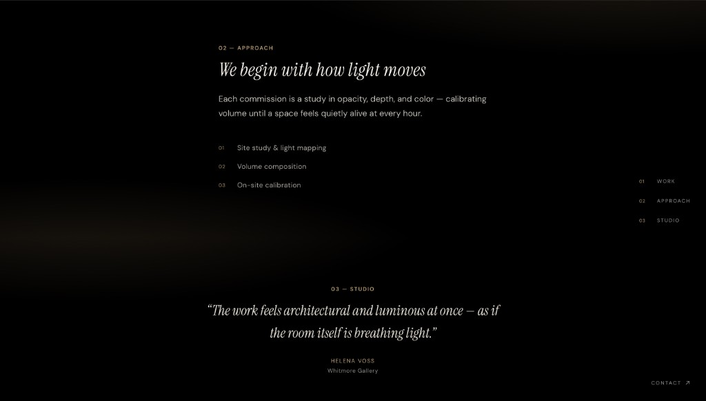

Work · 03
Prism
Preview

Design decisions
Black background with soft gold at the edges.
Italic serif for headlines. Small sans for body text.
Side nav for work, approach, and studio. Full-height sections.
Contact link in the corner. Not the main focus.
Outcome
Works for high-end lighting clients who need a slow, quiet first impression.
Calls usually started with process, not pricing. Look reused in later pitch decks.